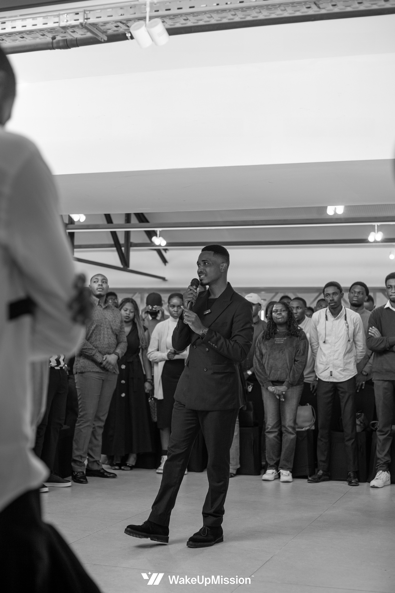
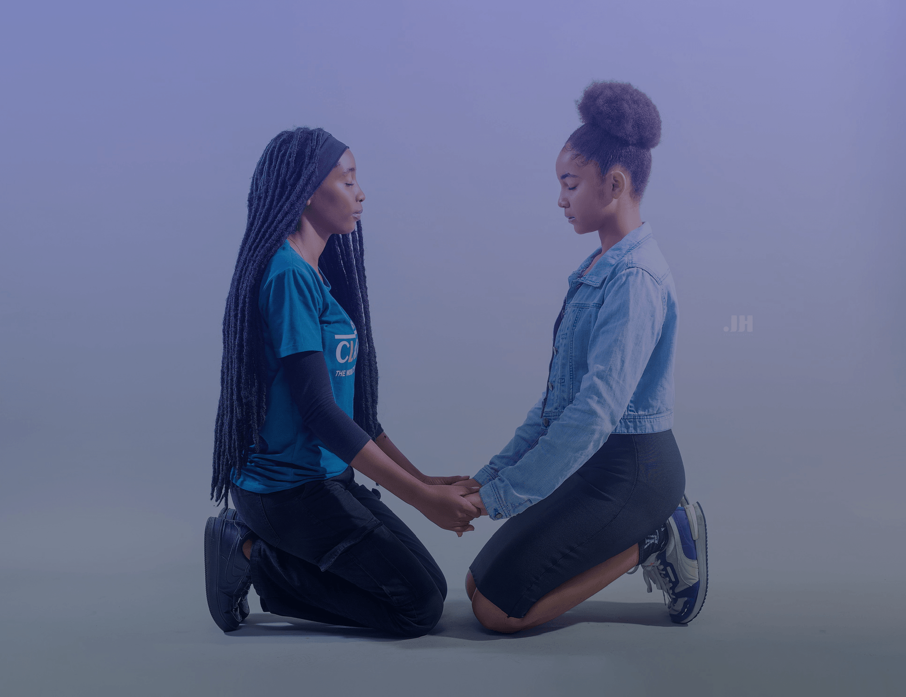
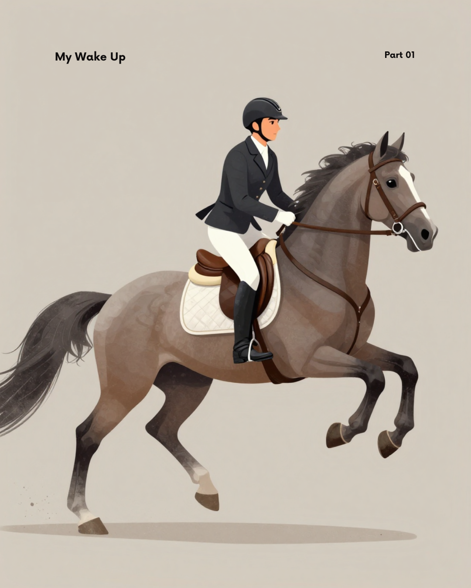

S'éveiller à Dieu
Découvrir les fondements de la foi chrétienne, en comprendre les valeurs et développer une relation personnelle et réfléchie avec Dieu.
Une initiative de Wake Up Mission — association chrétienne basée à Kinshasa, qui accompagne chaque jeune dans son éveil à Dieu, à soi-même et à son utilité dans la société.
La mentalité est le capital #1.

Wake Up Mission est une association chrétienne fondée à Kinshasa en avril 2020. Sa vocation est d'accompagner les jeunes de 15 à 35 ans dans un processus d'éveil qui articule foi chrétienne, développement de soi et contribution à la société.
Le Revêtement Mental est né de cette vocation. Il en est aujourd'hui le visage le plus visible — et le cœur de notre travail.
L'éveil est un processus, pas un événement.
Découvrir les fondements de la foi chrétienne, en comprendre les valeurs et développer une relation personnelle et réfléchie avec Dieu.
Apprendre à se connaître, comprendre son caractère, développer sa maturité, identifier ses capacités et discerner sa vocation.
La mentalité est le capital #1.
Le développement de soi n'est pas une fin en soi. Il s'agit de développer ses capacités et son sens des responsabilités pour contribuer positivement à la société et servir les autres.
Ces trois dimensions forment un seul parcours — celui que le Revêtement Mental rend accessible.
LES LOIS SPIRITUELLES SURPASSENT LES LOIS PSYCHOLOGIQUES MAIS ELLES NE LES SUPPRIMENT PAS.
Tu recherches ton essence profonde et la trouve en Lui. Tu t'enracines dans l'être plus que dans l'avoir. Tu t'éloignes de ce qui encombre le vrai toi. Tu vois la différence entre toi et les autres, le chemin de ta personne devient lumineux, tu l'acceptes et le cultive jusqu'à inspirer.
Philippiens 3:8

Tu saisis la pensée de Christ. Tu te lances dans une quête continuellement de redéfinition de soi, émotionnellement et mentalement tu suis la Vérité Éternelle.
2 Corinthiens 5:17
Romain 12:2

Fini le mal-être! Tu te sens de plus en plus connecté à toi-même, aux autres et au Père céleste. La joie de vivre te remplie, tu es reconnaissant pour chaque détail et loue le Seigneur qu'importe les circonstance.
Psaumes 1

Tu perçois le mouvement de Dieu autour de toi. Tu ressens et vois l'alignement et providence divine dans ta vie. Tu remarques plusieurs heureuses coïncidences, la vie te réponds quoique tu fasses. Tu sais reconnaître la grâce de Dieu sur ta vie faisant réussir des choses spécifiques de manière spectaculaire. Tu fais des rencontres inattendues marquantes et bouleversantes.
1 Samuel 10:5

Lorsque tu soumets ton être tout entier à Adonai (le Maître de tout), Il te donne la capacité de reprendre le contrôle totale sur toi-même. Tu sais te montrer patient avec toi même et les autres, tu es au dessus des émotions et des petits esprits.
Galates 2:20,22
Cette collection est distincte des cinq signes de l’éveil psychologique présentés ici.
Le Revêtement Mental n'est pas une conférence de motivation. C'est une pédagogie — une manière structurée de penser la transformation intérieure — et un programme qui la met en œuvre dans la durée.

Une pédagogie et un programme central de Wake Up Mission.
Le rendez-vous phare de Wake Up Mission, organisé deux fois par an.
Découvrir le Revêtement MentalUn atelier mensuel pour approfondir le programme dans un cadre structuré et durable.
Découvrir le RM ClubDes temps de retraite, de rencontre et de vie communautaire qui prolongent le parcours d'éveil.
Voir les activitésAnnée de fondation, à Kinshasa
Événements organisés sur fonds propres
Jeunes touchés cumulés
Personnes dans notre communauté en ligne
Vous êtes une institution, une église, une école ou une entreprise ? Wake Up Mission collabore avec des partenaires qui partagent sa conviction : la transformation des mentalités de la jeunesse est un levier stratégique pour l'Afrique.
Découvrir les possibilités de partenariatQue tu sois croyant ou en recherche, étudiant ou jeune professionnel, Wake Up Mission t'accompagne dans ton éveil à Dieu, à toi-même et à ton utilité dans la société.